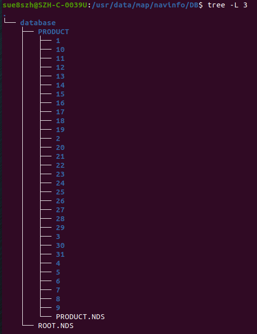

HDMap Data Version Note in Chery E0X
There are some versions of hdmap data to be used currently. Please download one of them based on data coverage .
Data Versions
OTA2.0
data：
O:\Engineering\domain\WAVE3\00_DataExchange\PER7\MapData\2024\DB-20231212Plus.zip
version
20231212Plus_withext_ nationwide
Navinfo Version No.
CHN_NDS_2.5.4_V02.450000_450342
data_20230715
Release Date
2023-07-15
Navinfo Version No.
CHN_NDS_2.5.4_V02.0015_20130712
URL to file
data coverage
highway: China
Urban: Shanghai(1000Km)/Shenzhen/Guangzhou/Suzhou(500Km)
size
6.9G
detail urban road
data_20230615
Release Date
2023-06-15
Navinfo Version No.
CHN_NDS_2.5.4_V02.0012_20230515
URL to file
data coverage
highway: China
Urban: Guangzhou/Shenzhen , about 5000Km
size
8.14G
detail urban road
data_20230515
Release Date
2023-05-15
Navinfo Version No.
CHN_NDS_2.5.4_V02.0011_20230420
URL to file
data coverage
highway: China
Urban: Guangzhou/Shenzhen , about 2000Km
size
7.28G
detail urban road
data_20230430
release date
2023-04-30
Navinfo Version No.
CHN_NDS_2.5.4_V02.0010_20230324
URL to file
data coverage
highway: China
urban: Shanghai/Suzhou/Guangzhou/Wuhu , 4x100Km
size
7.20GB
detail urban road
How To Use
after download and decompression, change the folder name CHN_NDS_2.x.x_V0x.0xxx_2023xxxx to database
copy the database folder to /usr/data/map/navinfo/DB/, if there is not ./navinfo/DB, create it yourself
final check, /usr/data/map/navinfo/DB/database/ROOT.NDS, as below
- 